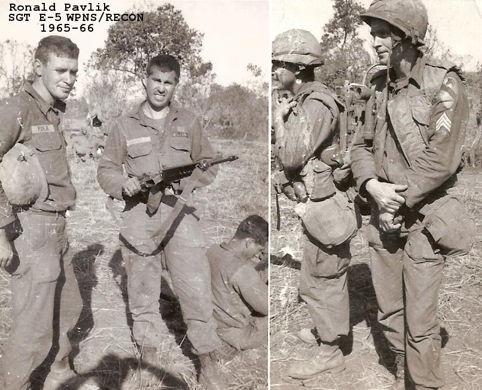

BACK
Remembered
Ronald Pavlik SGT E-5
Wpns/Recon 1965-66
Ronald A. Pavlik retired from the
military on Nov 1986 after
26 years. Died on June 12th 2005 from natural causes.
He had been working for the main post office in Manhattan
for 17 years when he died at the age of 69.
Contributed by Chuck Kline
